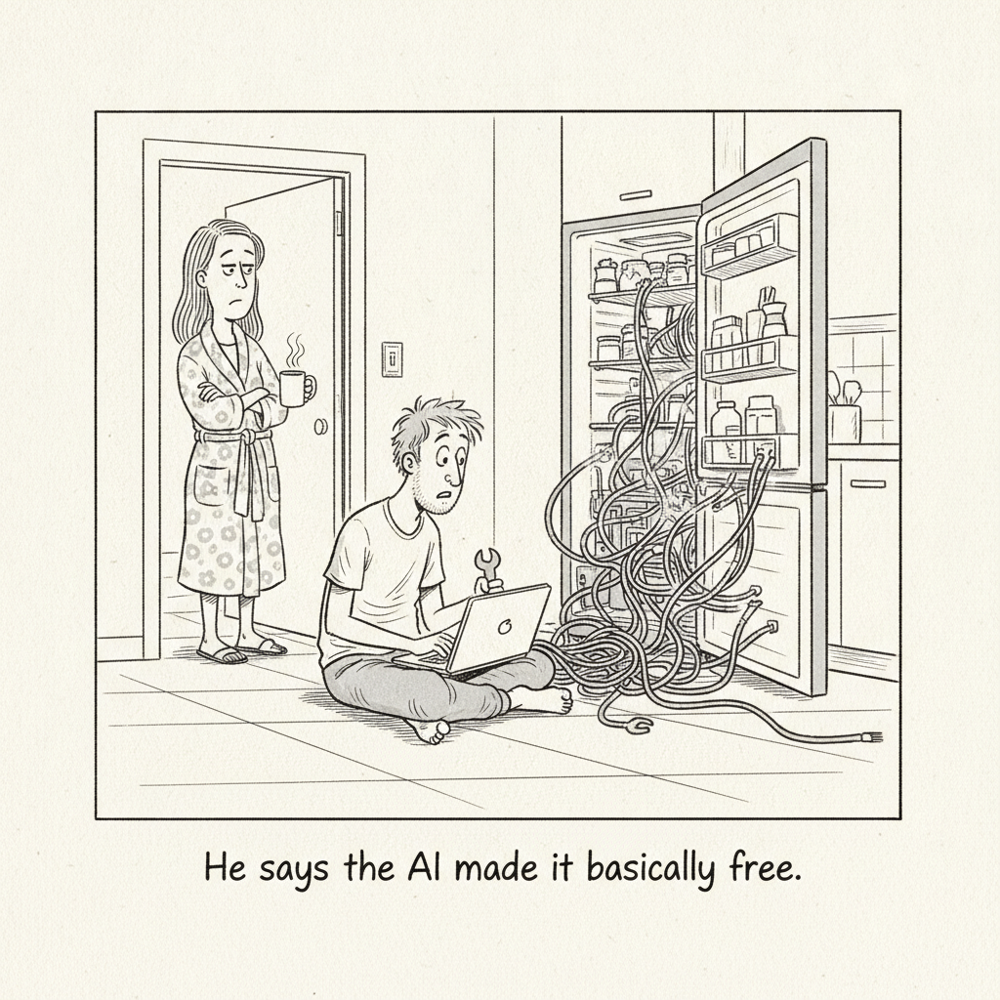

Your daily AI news digest
AI the News That's Fit to Prompt
A federal judge signed off on Anthropic's $1.5 billion payout to authors and publishers, now the largest award in the history of US copyright law. The money works out to roughly $3,000 per work across an estimated 500,000 titles.
The split ruling that produced it stands: training on copyrighted text is fair use, but Anthropic's method of getting the text, downloading millions of books from piracy sites like Library Genesis, was not. Because Anthropic settled before appeal, no binding precedent was set, and the lawsuits against Google, Meta, Midjourney, and OpenAI grind on.

"He says the AI made it basically free."
Reverse-Engineering Is Cheap Now
Coding agents have collapsed the cost of automating undocumented home devices. When rebuilding a broken integration takes minutes instead of a weekend, the maintenance burden that used to kill these projects stops mattering, and a whole class of "not worth it" hacks becomes worth it again.

OpenAI Is Scared of Open-Weight Models. Should the US Be?
After Moonshot's Kimi K3 landed, OpenAI's Dean Ball floated regulatory pressure on open models, then walked it back. The Trump administration is reportedly weighing a ban on advanced Chinese models. Critics, including Hugging Face's Clem Delangue, say that would concentrate power rather than make anyone safer; chip export controls would bite harder.

Google Is Building a New Chip to Make Gemini More Efficient
A custom server chip codenamed "Frozen v2," due in 2028, could be six to ten times more efficient than Google's current AI hardware measured in tokens per watt. The report, and Alphabet's $180-190B buildout, nudged the stock up about 3% as investors reward efficiency over raw scale.

Trump's Latest AI Czar Has Already Resigned
Chris Fall quit as director of the Center for AI Standards and Innovation after three months, the third departure in a run of turnover. Major decisions keep bypassing the agency: Commerce invoked export controls on Anthropic without it, and the new "Gold Eagle" cyber initiative left it off the list entirely.

AI's Most Important Protocol Is Getting Easier to Use
The Model Context Protocol is going "stateless," dropping the session IDs that forced every server behind a load balancer to know what the others handed out. Arcade's Nate Barbettini says the change makes running AI agents at scale look like running an ordinary website, removing a real barrier to production deployment.

DeepMind Lays Out Its Approach to Bioresilience
DeepMind and Isomorphic Labs, working with more than 15 governments and biosecurity groups, describe a prevention-detection-response framework: adapting SynthID watermarking to screen risky AI-generated DNA, using AlphaEvolve and AlphaGenome to spot new pathogens, and giving trusted researchers early access to speed countermeasures.

Who's Afraid of Chinese Models?
Willison highlights Ben Thompson's proposal to legalize distillation and codify training-as-fair-use, set against Alibaba open-weighting Qwen 3.8 Max (2.4 trillion parameters) after declining to release its predecessor, a reversal Thompson ties to Xi Jinping's fresh push for open-source "collaboration and sharing."

China's K3 Model Reveals the Problem With Open Weights
Jones unpacks why a frontier-caliber Chinese open-weight model changes the strategic math for US labs, and what "open" really buys you when the release is a competitive weapon as much as a gift.

Fable vs GPT-5.6 Wasn't Even Close
A head-to-head of Claude's Fable against GPT-5.6 on real creative and reasoning tasks, with a clear verdict on where each model wins and why the gap was wider than expected.

Stop Picking GPT-5.6 or Fable 5. Fuse Them.
Instead of choosing one frontier model, IndyDevDan builds a workflow that routes work between GPT-5.6 and Fable 5 so each does what it is best at, treating model choice as an orchestration problem rather than a loyalty test.

This $12 Billion Startup Finally Shipped Something
A fast, funny tour of Thinking Machines' first product and its business model: hand out a capable base model for free, then charge to fine-tune it into a specialist that crushes your one specific problem.

Hermes Agent Fundamentals in 29 Minutes
A compact primer on building agents with the Hermes stack, from the core loop to tools and memory, aimed at getting a working mental model fast rather than drowning in framework detail.

You Can Just Download More Tokens/Sec
sentdex digs into squeezing more inference speed out of hardware you already own, the practical, tinkerer's side of the "run it yourself" movement running through today's issue.
Anthropic Opens Rare Disease Research Grants
Up to $50,000 in Claude API credits per project across two tracks, basic science and early-stage biotech, aimed at diseases that affect an estimated 400 million people but lack registries and shared data. Applications close August 2.
Word Search
Find 8 AI terms. Click the first and last letter of each.